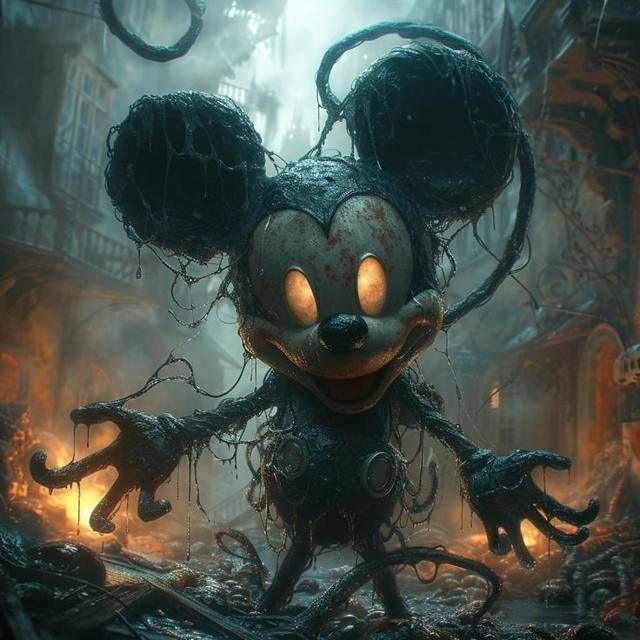
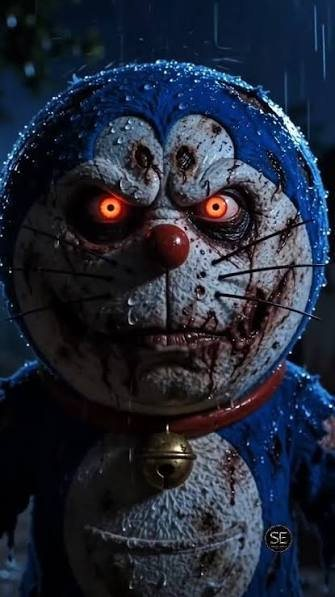
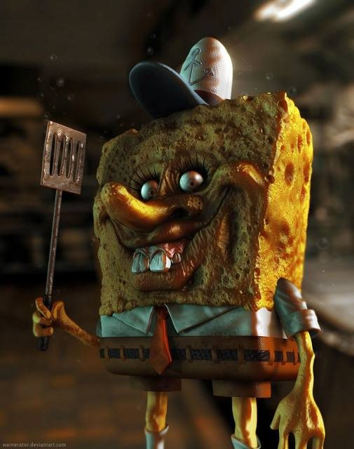
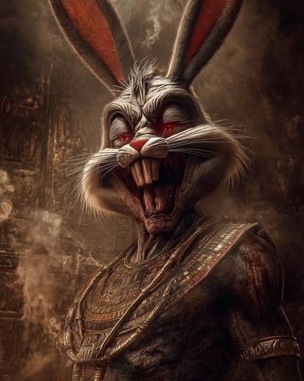
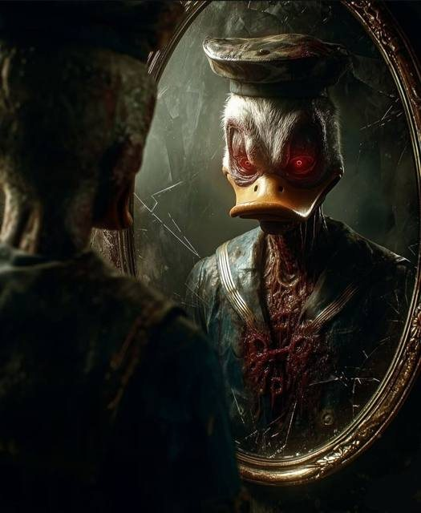

CONFIDENCIAL
NUESTRA INFANCIA DETRAS DE LAS CAMARAS
Cuando los dibujos se vuelven pesadillas
Nadie recuerda quién cambió el canal. Los dibujos de tu infancia siguen emitiendo, y desde entonces ninguno ha vuelto a sonreír igual.
← entra si te atreves



SECCIÓN 1 · LISTADO DE PERSONAS DESAPARECIDAS
Los desaparecidos
Mickey
Visto: 03:13
Doraemon
Visto: 00:00

Bugs
Visto: ¿qué hay de nuevo?

Donald
Visto: gritando